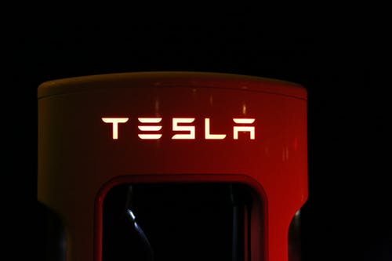
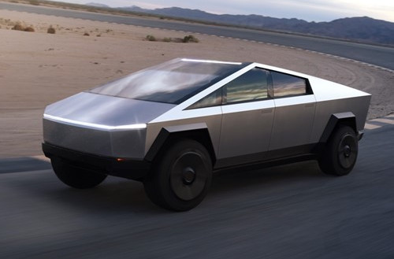

Author: Khutso Nkadimeng
22 Apr 2020
Shepherd’s Eye, a fictional company founded by my character Shepherd Modisha was inspired in part by an Israeli driving assistance software developing company Mobiliye, and American electric car maker Tesla Inc. To understand the Laws of User Experience created by Jon Yablonski, I used Tesla Inc as a case study, my choice was influenced by the laws of Connectedness and Similarity, that what I put up on this site must be connected. My perspective was guided by this UX summary from Nielsen Norman Group: "User experience" encompasses all aspects of the end-users interaction with the company, its services, and its products [1].
Aesthetic Usability Effect: Users often perceive aesthetically pleasing design as design that’s more usable.
Electric vehicles were always known to be ugly cars with low range and stood no chance against internal combustion engine cars. What Tesla did was to design an aesthetically pleasing high-performance car with long-range. Just by looking at a Tesla Model S, you will be convinced you can take on any BMW.
Fitts Law: The time to acquire a target is a function of the distance to and size of the target.

To free drivers from a dashboard full of old clunky buttons, Tesla decided to centralise all controls from radio to sunroof using their signature giant screen. To give you some perspective, the screen is at least the size of our school-issued Dell Inspiron laptops. If you have driven a car, you know the feel and position of your volume button and can use it without looking, but as a smartphone user I can assure you, it is very difficult to use a slider without a quick peek and that is unacceptable for a driver. The size of the screen is meant to mitigate that by amplifying all icons and buttons. It is also worth noting that Tesla is designing their cars to be fully autonomous in future, this huge screen will eventually be used purely for entertainment purposes.
Jakob’s Law: Users spend most of their time on other sites. This means that users prefer your site to work the same way as all the other sites they already know.

Tesla Motors has always been a polarising company, tech enthusiasts made
an inspiring bull case, but the bears made a reasonable case using
proven auto industry models. Tesla stock eventually became the most
shorted in history, but its fans continued to rally behind it. What no
one expected was a division among its most loyal fans, that was because
Tesla to shift radically from the norm when they launched their
Cybertruck.
References
2. Laws Of UX